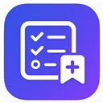
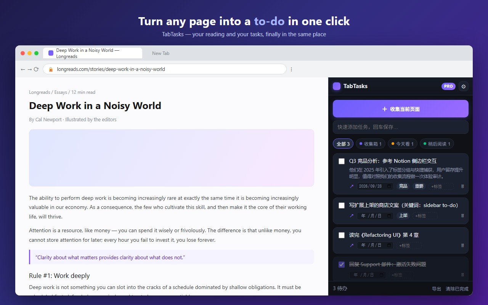
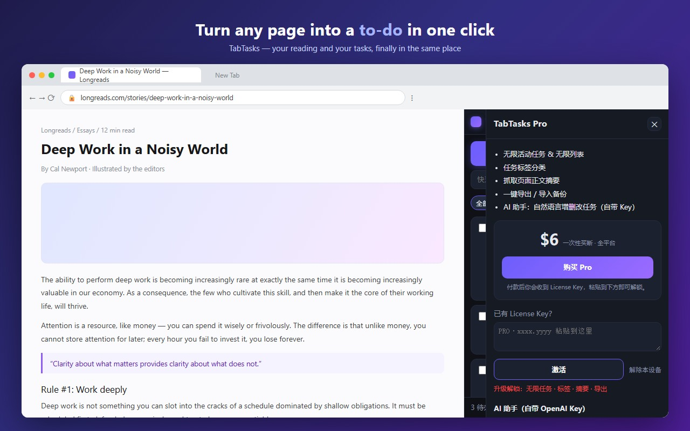

Turn any web page into a to-do in one click.
A lightweight sidebar task collector — your reading and your tasks, finally in the same place.


Hit Alt+Shift+T (or one button) and the page you're reading becomes a task, with its link attached.
Organize "read later", "research" and "ideas" without leaving the page you're on.
Right-click any selected text to capture it as a task note, then break the task into one-level subtasks.
Export due dates as an .ics file and open them in Google, Outlook or Apple Calendar.
No account, no server, no tracking. Everything lives in your own browser storage.
Free forever for everyday use. Pro is a one-time $6 lifetime unlock — no subscription.
TabTasks Pro — one-time, lifetime
Unlimited tasks & lists · tags · page excerpt · export/import · AI assistant with your own key